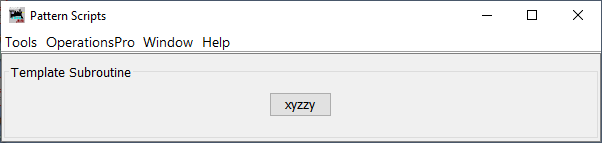

Le plugin Pattern Scripts pour JMRI est une suite de sous-programmes pour JMRI Operations Pro. L'utilisation de ce plugin est documentée dans la liste suivante de vidéos YouTube. Les vidéos sont enregistrées en anglais.
Une vue d'ensemble de ce plugin
Comment ajouter ce plugin à JMRI
Le sous-programme o2o - Utiliser JMRI avec le logiciel de modélisme ferroviaire TrainPlayer©
Le sous-programme Patterns - Vue d'ensemble
La sous-routine Patterns - Démonstration dans l'industrie
Le sous-programme Patterns - Démonstration dans un chantier naval
Le plugin Pattern Scripts peut être considéré comme un cadre pour l'hébergement de sous-programmes (ou scripts) pour JMRI Operations Pro qui nécessitent une interface utilisateur. Ce plugin est livré avec quatre sous-programmes : jPlus, Patterns, o2o et Throwback. Un modèle est également inclus pour servir d'échafaudage à quelqu'un qui souhaite ajouter son propre sous-programme.
Des sous-programmes peuvent être ajoutés ou supprimés individuellement selon les besoins.
En outre, chaque sous-programme peut être affiché ou masqué selon les besoins, à partir du menu Outils.
Chacune des fonctionnalités des sous-programmes n'est disponible que lorsque le plugin est en cours d'exécution et que le sous-programme a été inclus. Par exemple, les détails ferroviaires étendus n'apparaîtront dans les rapports que lorsque le plugin Pattern Scripts a été lancé et que jPlus a été inclus. Pour désactiver les fonctionnalités des plugins, fermez (et non masquez) la fenêtre Swindow Pattern Scripts.
Ce plugin peut générer quatre types de rapports :
1) Liste des trains : lorsqu'elle est activée, la construction d'un train génère une liste de trains OPS, détaillant les wagons du train pour chaque emplacement le long de l'itinéraire du train.
2. bon de travail. Lorsqu'il est activé, un bon de travail est généré pour un train lorsqu'il est construit. Le bon de travail détaille les tâches programmées pour chaque emplacement le long de l'itinéraire du train.
3) Rapport sur les modèles : lorsque vous utilisez le sous-programme sur les modèles, un rapport sur les modèles pour un emplacement détaille les données d'inventaire pour les pistes sélectionnées.
4) Liste d'aiguillage. En utilisant le sous-programme Patterns, une liste d'aiguillage peut être générée pour n'importe quelle voie. Les équipes d'aiguillage utilisent ces listes pour effectuer leurs tâches.
Pour activer ou désactiver la liste des trains et le bon de travail, sélectionnez Outils - Rapports étendus.
Note: The train list and work order can be thought of as alternative interpretations of JMRI manifest and switch list, with the train list substituting for the manifest and the work order substituting for the JMRI switch list. Both reports are built from a JMRI created manifest json file.
Tous les rapports OPS sont construits à partir de fichiers json. Les json créés par ce plugin suivent la structure de données du manifest json de JMRI.
Dans la mesure du possible, le CSV généré par ce plugin suit le formatage CSV de JMRI.
Le tableau suivant montre la structure du code de ce plugin.

OperationsPatternScripts.MainScript.View.makePatternScriptsWindow()

Chaque profil JMRI dispose de son propre fichier de configuration, appelé configFile.json, qui se trouve dans le dossier operations et qui est utilisé pour fournir des paramètres personnalisés pour chaque profil et enregistrer les entrées de l'utilisateur.
Sélectionnez Outils/Modifier le fichier de configuration. Les valeurs modifiables par l'utilisateur se trouvent dans les sous-sections intitulées "US" pour User Settings. Les autres valeurs ne doivent pas être modifiées. Si une erreur est commise lors de la modification du fichier de configuration, le plugin supprimera le fichier et en fournira un nouveau pour recommencer en utilisant les valeurs par défaut. Dans le pire des cas, le plugin peut se planter. Si cela se produit, sélectionnez Outils/Redémarrer à partir de la valeur par défaut.
The following are user editable values for the plugin.
For colors, any of the A, B, G, R values can be changed, between 0 and 255.
Also, new colors may be added.
"US" : {
"OPR" : "pattern report ({}).{}", Nom du fichier du rapport de modèle OPS.
"OSL" : "switch list ({}).{}", Nom du fichier de la liste des commutateurs OPS.
"OTL" : "train list ({}).{}", Nom du fichier de la liste des trains OPS.
"OWO" : "work order ({}).{}", Nom du fichier de l'ordre de travail OPS.
"HCP" : " [ ] Hold", Tenir le préfixe de la voiture.
"AW": { Largeur de l'attribut : dans tout rapport OPS, le nombre de caractères alloués à chaque attribut.
" ": 1,
"Color": 6,
"Comment": 15,
"Consist": 8,
"DCC_Address": 10,
"Destination": 15,
"Dest&Track": 27,
"FD&Track": 23,
"Division": 15,
"Final_Dest": 11,
"Hazardous": 10,
"Kernel": 7,
"Kernel_Size": 3,
"Length": 3,
"Load": 12,
"Load_Type": 1,
"Location": 9,
"Number": 5,
"Model": 5,
"Owner": 20,
"PickUp_Msg": 12,
"RWE": 10,
"RWL": 10,
"Road": 4,
"SetOut_Msg": 12,
"Track": 12,
"Type": 3,
"Weight": 7
},
"OC" : true, Open Console (Ouvrir la console) : ouvre la console du système au démarrage du plugin.
"OT" : false, Ouvrir la fenêtre Trains au démarrage du plugin (non utilisé)
"CD": { Définitions de couleurs, un ensemble de couleurs prédéfinies.
"BLANCH": { Le nom de la couleur.
"A": 210, Valeur alpha (transparence).
"B": 255, La valeur de la composante bleue.
"D": "Lighten a bit", Une description de la couleur.
"G": 255, La valeur de la composante verte.
"R": 255 La valeur du composant rouge.
},
"GLOOM": {
"A": 10,
"B": 0,
"D": "Darken a bit",
"G": 0,
"R": 0
},
"DUST": {
"A": 255,
"B": 218,
"D": "Light tan",
"G": 242,
"R": 252
},
"FADED": {
"A": 255,
"B": 245,
"D": "Light purple",
"G": 225,
"R": 237
},
"LICHEN": {
"A": 255,
"B": 244,
"D": "Light green",
"G": 255,
"R": 236
},
"PALE": {
"A": 255,
"B": 250,
"D": "Light blue",
"G": 243,
"R": 237
},
"RASH": {
"A": 255,
"B": 224,
"D": "Light red",
"G": 208,
"R": 240
},
"colorA" : "DUST", Le nom de la couleur à utiliser lorsque colorA est appelé.
"colorB" : "FADED", Le nom de la couleur à utiliser lorsque colorB est appelé.
"colorC" : "RASH" Le nom de la couleur à utiliser lorsque colorC est appelé.
}
},
Le sous-programme jPlus ajoute des détails ferroviaires étendus aux rapports générés par ce plugin. Ces détails sont affichés dans l'en-tête de tous les rapports OPS. L'en-tête du serveur JMRI n'est pas modifié.
Pour utiliser ce sous-programme, saisissez les données appropriées dans la zone de texte et cliquez sur "Mise à jour". Il n'est pas nécessaire de saisir tous les champs.
Il s'agit du chemin de fer qui possède ou exploite les voies modélisées. N'importe quel nom peut être saisi, tel que "PRR" ou "BN UPRR Joint" ou "G&D".
Il s'agit du nom du chemin de fer pour la partie modélisée, par exemple "Long Beach Intermodal Terminal" ou "Salem Glass Works Branch".
Lieu où se trouve le chemin de fer, par exemple "The Great Divide" ou "The Bronx, New York".
L'année sur laquelle le modèle de chemin de fer est basé, c'est un miroir de 'JMRI/OperationsPro/Settings/Year Modled'. L'un met à jour l'autre.
En appuyant sur le bouton Mettre à jour, les valeurs saisies dans les zones de texte sont enregistrées dans le fichier de configuration.
En cochant cette case, les informations de l'en-tête étendu seront incluses dans tous les rapports OPS.
Sous-routines.jPlus.View.ManageGui

The jPlus section of the configuration file has no user editable settings.
La sous-routine ops to ops (o2o) est un groupe d'utilitaires conçus pour être la colle qui permet à JMRI Operations Pro d'être le moteur d'opérations pour TrainPlayer©. L'idée est d'étendre la capacité de la fonction Advanced Ops de TrainPlayer© pour inclure la flexibilité d'Operations Pro, tout en éliminant le fastidieux maintien de deux ensembles de données synchronisées.
o2o exporte automatiquement un train construit ou une liste d'aiguillage vers TrainPlayer lorsque la fenêtre Pattern Scripts est ouverte et que le sous-programme o2o est inclus. Pour désactiver l'exportation o2o, supprimez o2o de la fenêtre Pattern Scripts ou fermez (ne cachez pas) la fenêtre Pattern Scripts.
Avant d'appuyer sur l'un de ces boutons, exportez votre schéma de TrainPlayer. Les sous-routines QuickKeys pour TrainPlayer doivent être ajoutées à TrainPlayer avant que votre schéma de TrainPlayer puisse être exporté. Reportez-vous à la documentation sur les Quick Keys.
La page des clés rapides sur GitHub
L'appui sur ce bouton initialise les jeux de données Locations, Cars et Engines afin qu'un nouveau chemin de fer JMRI puisse être construit à partir de l'exportation TrainPlayer. Les fichiers XML Routes et Trains sont sauvegardés.
Si vous utilisez jPlus, les données étendues que vous avez saisies dans la mise en page de TrainPlayer seront ajoutées.
De plus, lors de toute modification ultérieure du panneau Locations de la fenêtre Advanced Ops de TrainPlayer, réexportez votre schéma TrainPlayer et appuyez sur ce bouton pour mettre à jour vos données JMRI.
Le fait d'appuyer sur Importer des lieux permet également d'importer/mettre à jour les industries et les voitures.
Appuyez sur ce bouton lorsque vous avez fait des changements dans le panneau Industries de TrainPlayers Advanced Ops, cela mettra à jour vos embranchements et leurs horaires. Tous les changements que vous avez faits à votre matériel roulant seront également mis à jour.
Pressing Import Industries importe également des voitures.
Appuyez sur ce bouton lorsque vous avez modifié le matériel roulant de votre réseau TrainPlayer.
En appuyant sur ce bouton, les détails ferroviaires étendus entrés dans les paramètres personnalisés des touches rapides de TrainPlayer seront ajoutés à jPlus. Cette option est facultative.
L'un des principaux objectifs d'o2o est d'éliminer la duplication entre vos schémas TrainPlayer et JMRI. Dans la mesure du possible, la maintenance du schéma est effectuée sur votre schéma TrainPlayer et les modifications sont ensuite transférées sur votre schéma JMRI.
Le tableau ci-dessous indique quel programme gère quels éléments de votre mise en page.

Utilisez TrainPlayer pour gérer les détails du réseau, les wagons, les locomotives, les horaires et les emplacements.
Utilisez TrainPlayer pour définir les divisions et les voies, et utilisez JMRI pour mettre en œuvre les détails.
Utilisez JMRI pour gérer tous les aspects des itinéraires et des trains.
Au fur et à mesure que la présentation de votre JMRI devient plus nuancée, la gestion des ensembles de données sera de plus en plus partagée (mais pas dupliquée) entre les deux programmes.
Sous-routines.o2o.View.ManageGui

The o2o section of the configuration file has the following user editable settings.
The TrainPlayer car code lists are grouped by types of equipment, based on default TrainPlayer values.
Any car code not listed is considered a manifest freight car.
Custom car codes added to TrainPlayer would also be added here.
"US" : {
"XE" : [ Liste des codes de voitures TrainPlayer pour les moteurs.
"E",
"ES",
"ED",
"EE",
"ET"
],
"XP" : [ Liste des codes de voitures TrainPlayer pour les voitures de passagers.
"EP",
"CA",
"CS",
"D",
"DA",
"DB",
"DC",
"DL",
"DO",
"DP",
"DPA",
"P",
"PA",
"PAS",
"PB",
"PBC",
"PBO",
"PC",
"PL",
"PO",
"PS",
"PSA"
],
"XX" : [ Liste des codes de wagons TrainPlayer pour les wagons à bagages.
"B",
"BE",
"BH",
"BM",
"BMR",
"BMT",
"BP",
"BR",
"BX",
"MA",
"MB",
"MR"
],
"XC" : [ Liste des codes de voiture TrainPlayer pour les cabines.
"N",
"NM",
"NE"
],
"XM" : [ Liste des codes de wagons TrainPlayer pour le matériel MOW.
"M",
"MWB",
"MWC",
"MWD",
"MWG",
"MWF",
"MWK",
"MWR",
"MWX"
]
},
Le sous-programme Modèles permet de générer des rapports de modèles pour les voies d'une même localité. De plus, les wagons peuvent être déplacés d'une voie à l'autre à l'intérieur d'une même localité. En option, si un wagon est déplacé sur un embranchement, l'horaire de cet embranchement peut être appliqué.
Si vous utilisez des divisions, le menu déroulant Division affichera une liste de divisions. En sélectionnant une division, la liste des emplacements de cette division s'affichera dans le menu déroulant Emplacement.
Lorsqu'un lieu est sélectionné, une liste de cases à cocher s'affiche, une pour chaque piste du lieu sélectionné.
La liste des pistes peut être filtrée en activant ou désactivant la case à cocher "Pistes de triage uniquement".
Les pistes individuelles peuvent être sélectionnées en cliquant sur la case à cocher située à côté du nom de la piste.
Lorsque les pistes sont sélectionnées, le fait d'appuyer sur la touche Track Inquiry permet d'afficher des informations d'inventaire (Pattern Report) sur les pistes sélectionnées. Ces informations sont imprimables.
Si l'option Tools/Options/Generate CSV Switch List est sélectionnée, le rapport de schéma sera ajouté au dossier csvSwitchLists sous la forme d'un fichier CSV.
Une fois les voies sélectionnées, le fait d'appuyer sur le bouton "Set Rolling Stock to Track" ouvre une liste de travail pour chaque voie sélectionnée.
Pour chaque fenêtre de la liste de travail, une rangée de boutons, un pour chaque piste de l'emplacement sélectionné, s'affichera. En appuyant sur l'un des boutons de piste, le nom de la piste sera chargé dans la mémoire.
Pour n'importe quelle ligne de matériel roulant dans le panneau Voitures à..., cliquer à l'intérieur de l'une des zones de texte collera le nom de la voie sélectionnée dans la zone.
Le fait d'appuyer sur le bouton + Liste de commutation génère une liste de commutation de travail pour cette piste. Cette liste est imprimable.
Si l'option Tools/Options/Generate CSV Switch List est sélectionnée, la liste des commutateurs sera ajoutée au dossier csvSwitchLists sous la forme d'un fichier CSV.
Si o2o est utilisé, une liste de travail TrainPlayer sera également générée.
En appuyant sur le bouton "Set Rolling Stock to Track", la fenêtre "Additional Choices" s'ouvre.
La fenêtre contextuelle ajoute l'option d'utiliser un horaire d'éperon et de modifier la capacité de la voie.
En appuyant sur le bouton "Set Cars", le matériel roulant de la liste de travail sera déplacé sur la voie sélectionnée, sous réserve des restrictions de type.
Sous-routines.Patterns.View.ManageGui

Subroutines.Patterns.ControllerSetCarsForm.CreatePatternReportGui.makeFrame()

The Patterns section of the configuration file has the following user editable settings.
"US" : {
"DS" : "Not Assigned", Indicateur de destination lorsque le champ est vide.
"DT" : "Not Scheduled", Indicateur de la voie de destination lorsque le champ est vide.
"FD" : "Unconsigned", Indicateur de destination finale lorsque le champ est vide.
"FT" : "No Waybill", Destination finale et indicatif de la voie lorsque le champ est vide.
"EH" : "Available", Manutention prolongée, indicatif de cas particulier pour le moteur, le passager et le fourgon de queue.
"SL": { Trier les locomotives
"model":1,
"destination userName":0,
"road":0
},
"SC" : { Trier les voitures
"destination userName":0,
"division":0,
"finalDestination userName":1,
"loadType":2,
"road":0
}
For sorting, a zero means the field is not included, a one sorts that field first, a two sorts second, ETC.
Expliquez à quel point ce sous-programme est extraordinaire.
Décrivez l'utilisation de ce sous-programme.
Sous-routines.Template.View.ManageGui
">The Throwback section of the configuration file has no user editable settings.
La sous-routine Throwback s'inspire d'un logiciel de contrôle des versions. Les modifications sont nommées et sauvegardées. Ce faisant, des instantanés sont pris des ensembles de données ferroviaires de l'IRMJ.
L'engagement sert alors de point de référence qui permet de réinitialiser n'importe quel ensemble de données de l'IRMJ.
Les engagements sont utiles pour tester les idées "Et si ?", ou pour simuler une session d'exploitation avant la session d'exploitation réelle, ou pour tester le mouvement du matériel roulant ETC.
Ce sous-programme n'interagit pas avec les fonctions d'enregistrement et de sauvegarde automatiques de JMRI, qui s'exécutent telles qu'elles ont été configurées.
Le nom de chaque livraison est saisi dans la zone de texte du cadre Total des livraisons. Saisissez le nom AVANT d'appuyer sur le bouton Ajouter une nouvelle livraison.
En appuyant sur le bouton Ajouter un nouvel engagement, vous ajoutez un nouvel engagement.
En appuyant sur le bouton Supprimer toutes les validations, vous pouvez choisir de confirmer ou d'annuler la validation. En appuyant sur le bouton Confirmer, vous effacez toutes les validations sauvegardées, soyez donc prudent !
Dans le panneau Action, les boutons Précédent et Suivant facilitent le défilement de votre collection de commits. La liste est classée par date/heure de création.
Sélectionnez n'importe quelle combinaison d'ensembles de données à renvoyer en cliquant sur la case correspondante.
En appuyant sur la touche Throwback, les ensembles de données sélectionnés sont ramenés à l'engagement affiché.
Subroutines.Throwback.View.ManageGui()

The Throwback section of the configuration file has no user editable settings.